泰马记（上）｜低云之下的曼谷
从曼谷机场出来，第一反应是热，第二反应是：云真低。
那是我第一次觉得，“高耸入云”也可以用来形容云本身，而不只是建筑和山峰。来到郑王庙时，塔尖向上伸展，低垂的云仿佛压在建筑上方，神圣感也跟着变得具体。
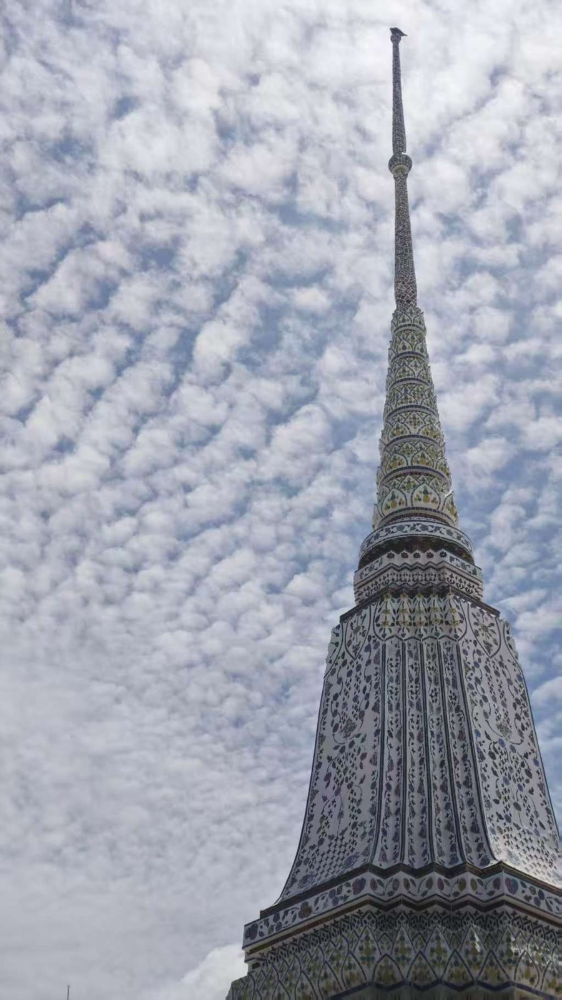
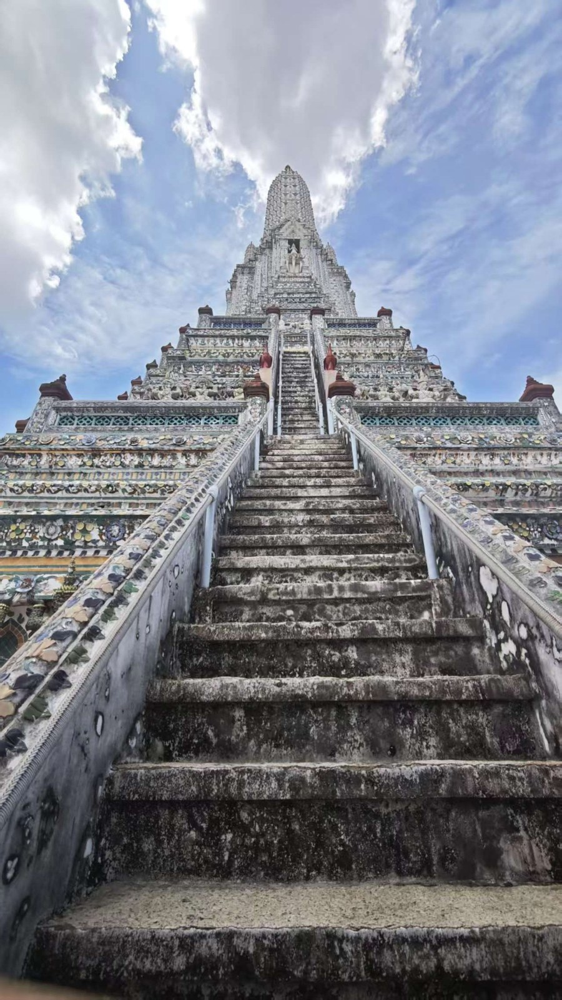
01｜从天空落到街道
慢慢接近这座城市以后，地面上的事情开始比天空更抓住我的眼球。
我们住在辉煌区。去夜市的路上，中文招牌一块接一块，商店挤得像沙丁鱼罐头。窄窄的街道上，小贩叫卖着衣服、水果和烧烤，头顶横着密密麻麻的电线，路边则立着曼谷市长竞选的告示牌。
其中出现最多的，是一块写着“Save Bangkok”的黄色牌子。它让我对这座“需要被拯救”的城市，多了一点好奇。
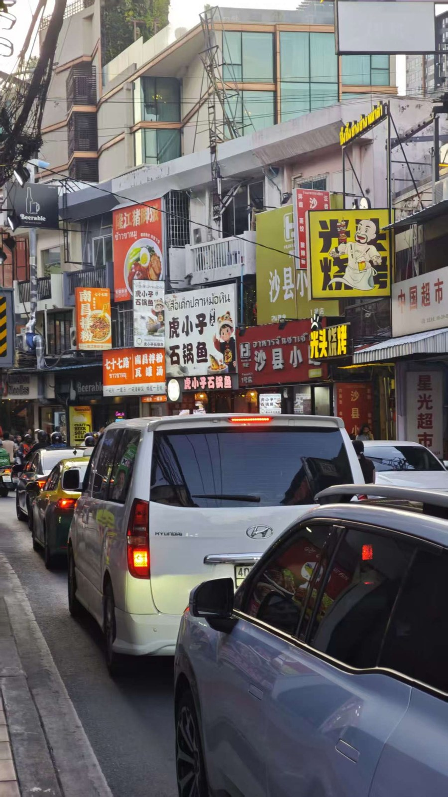
02｜打车很贵，走路也不轻松
曼谷最贵的似乎不是吃饭，而是打车。即使人民币兑泰铢的汇率看起来很友好，每次叫车折合下来仍常常要花六七十元。
从机场到酒店，半个小时的路程里几乎没遇到红绿灯。车少的时候，这是畅通；到了车流密集的路段和时段，它就会变成一场漫长的拥堵。当地常见的解决方式，是安排工作人员站在路口挥动红旗，像一盏会走动的“人肉红绿灯”。
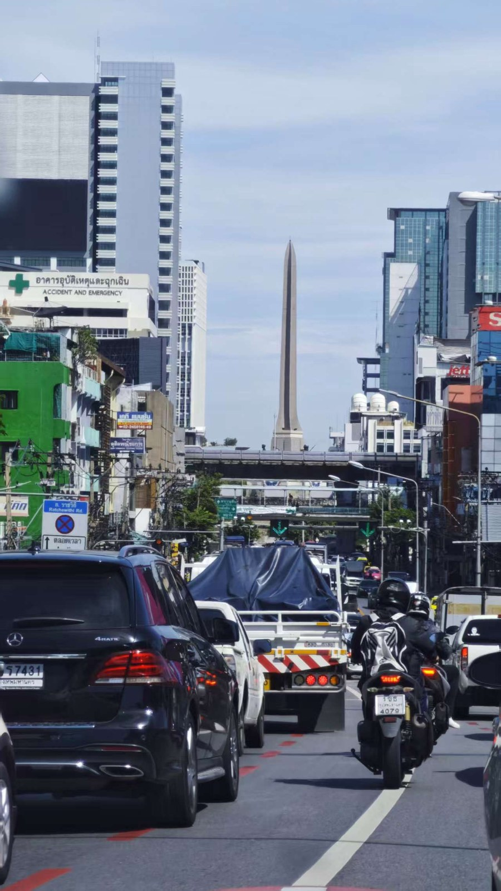
除了汽车，曼谷还有大量摩托车和三轮车。有些路段并没有给行人留下太多空间，走路时耳边是发动机的噪声，空气里也混着机油味。我忍不住想，大一学过的交通工程，也许在这里能派上更大的用场。
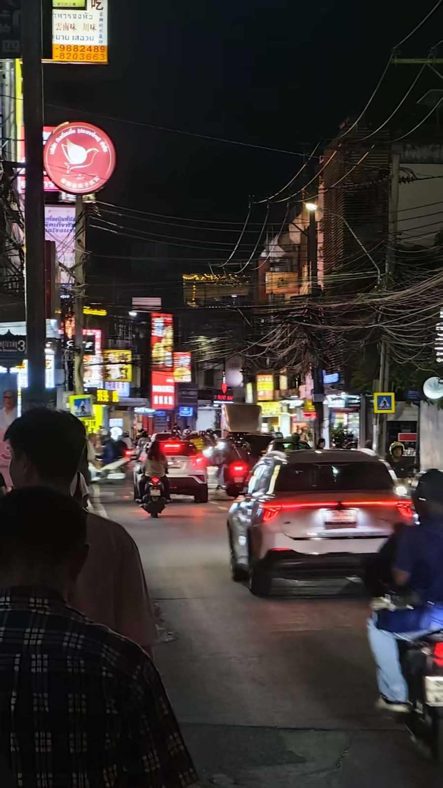
03｜旅行中的警惕
第一天晚上，我们去了辉煌夜市附近一家小红书推荐的餐厅，也吃到了整个泰国行最贵的一顿饭。结账时，店员告诉我们，使用国内常见的支付方式还要额外收取3%的手续费。
后来回想，从菜单拿上来的那一刻开始，整件事就透着一点不透明：每道菜原来的价格都被白纸盖住，再重新手写。我们开玩笑说，这大概是“游客专供菜单”。
第二天，我们包了一辆车。司机会说中文，大家叫他“三哥”。因为他手部行动不便，我们一开始下意识多了几分好感。刚上车时，我夸他中文说得好，他笑着回答：“跟我学的。”
这份好感来得快，去得也快。三哥先说旅行社规划的路线不顺路，又说必须另外坐船，最后提出包船要3000泰铢。好在旅行社及时介入，行程才重新回到原来的安排。人在异国他乡，很容易先去依赖别人，又不得不一边依赖一边判断。
04｜一顿靠比划完成的午饭
当天中午，我们去了水上市场，并根据 Google Maps 找到一家评价很好的小店。泰国很多店名只写泰文，要在现实招牌和手机地图之间匹配两个“字符串”，并不是一件容易的事。
好在门口一位 Grab 骑手会说几句英语，告诉我们确实找对了地方。刚坐下，一群中国游客正好吃完离开，边走边对我们说：“好吃，好吃。”
真正困难的是点单。餐厅里的老太太不会中文和英文，翻译软件也没能认出菜单。我们连猜带比划了十几分钟，最后索性采取“上什么吃什么”的策略。结果出人意料地满意：三个人点了四个菜两道海鲜，结账折合人民币大约80元。便宜和好吃同时出现时，我对这家小店的好感又多了一截。
05｜同一条河的两种生活
吃完饭，我们坐船沿着湄南河去看佛像。早就听说河水浑浊，但亲眼看到时仍然有些震撼。
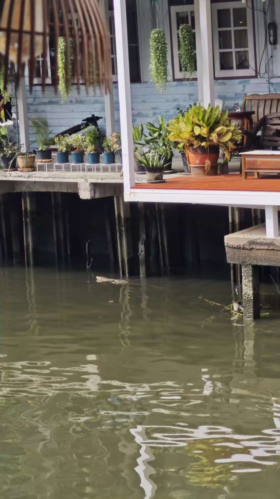
沿岸是以木桩支撑的旧房子，距离河面很近；水里还不时浮出几张“鞋拔子脸”的大蜥蜴，我们开玩笑说，眼前像是湄南河突然切换成了尼罗河。
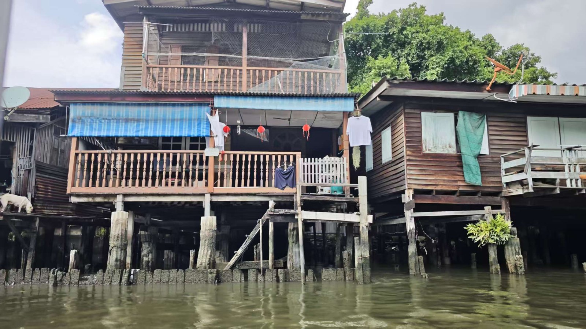
晚上，我们来到同样位于湄南河沿岸的暹罗天地。这里明亮、精致，商场里集合了餐厅、品牌店和室内景观。很难想象，下午看到的河岸生活与这里相距不过几公里。
更有戏剧性的是：下午，我们看见河里的“大蜥蜴”；晚上，在商场负一层，我们真的尝到了鳄鱼肉。
同一条河的两种生活
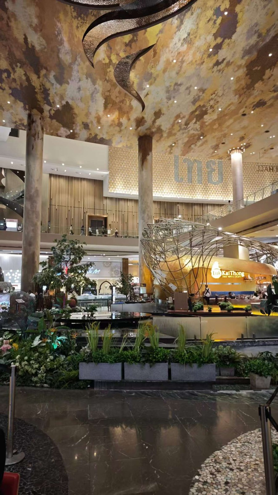
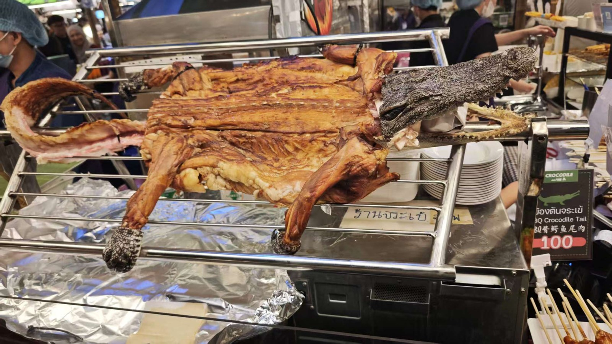
06｜画师、普通劳动者和“枪王”
在曼谷的几天里，我们遇到了形形色色的人。水上市场有一位给游客画像的画师。他说自己是一名退休律师，会把画过的作品上传到 Instagram。
我们试着讲价时，他认真解释：这不是批量生产的 product，而是他一笔一笔画出来的作品，所以不能因为我们有三个人就更便宜。那一刻，比画像本身更打动我的，是他对自己劳动价值的坚持。
泰国常被游客提起的，还有跨性别文化。芭提雅有面向游客的舞台表演，而在曼谷，我们看到的更多是日常生活中的普通劳动者：司机、超市理货员。离开舞台以后，这些身份不再是旅游标签，而只是城市生活的一部分。
“枪王”则不是别人，正是我自己。最后一天，我们去了海军射击场。也许是因为多给了小费，教练帮我反复调整姿势和枪的位置，最后得到一张弹孔密密麻麻的靶纸。
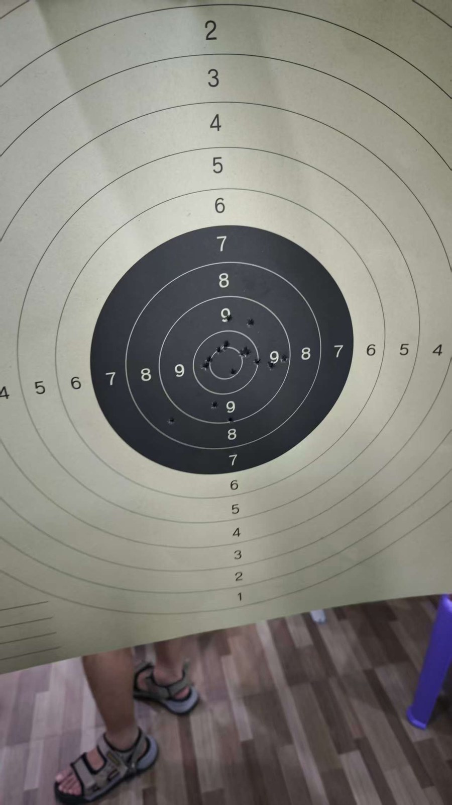
不过这个称号只维持到手枪环节。轮到手枪时，我很快暴露了真实水平：瞄准不够稳定，后坐力又不断把枪口带高，弹孔散得到处都是，真正上靶的没有几发。
07｜最后，当然是吃
最后放几张美食照片。泰国菜里常见酸、辣和香料，对一个正处在口腔溃疡康复期的人来说，并不算特别友好。好在旅行的胃总比平时勇敢一点。
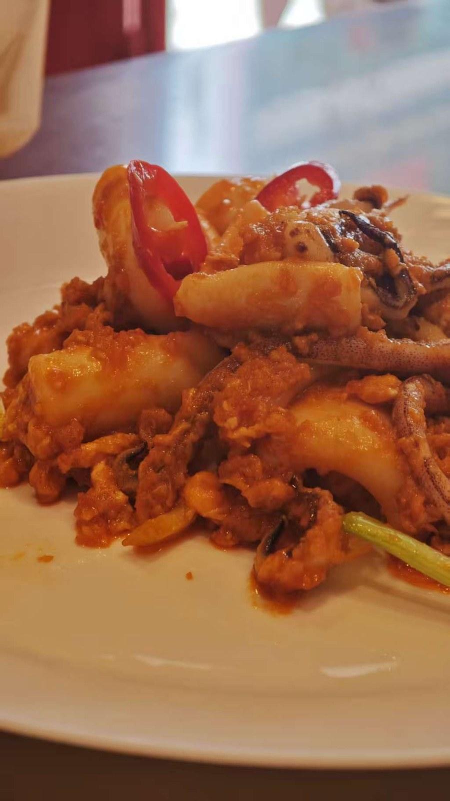
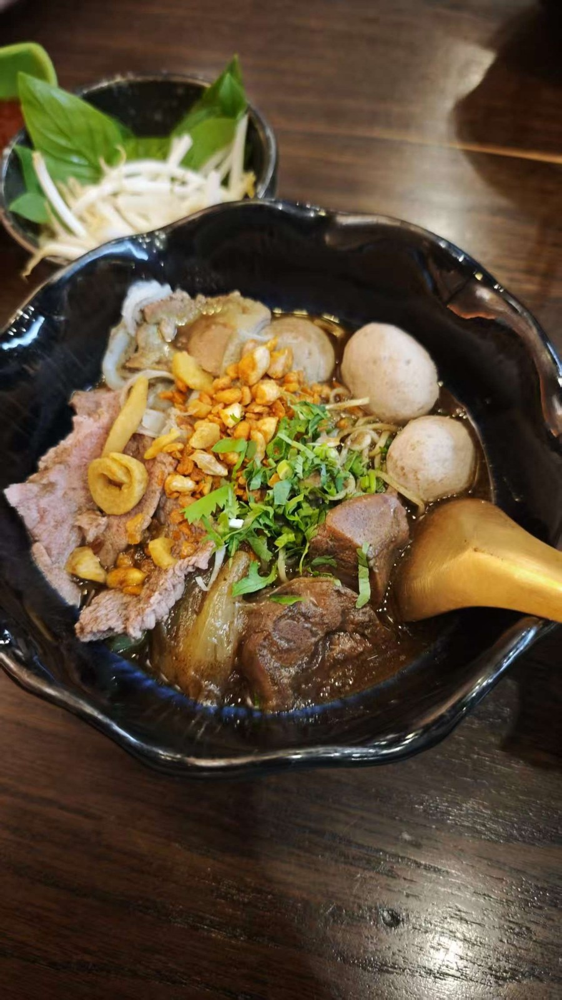
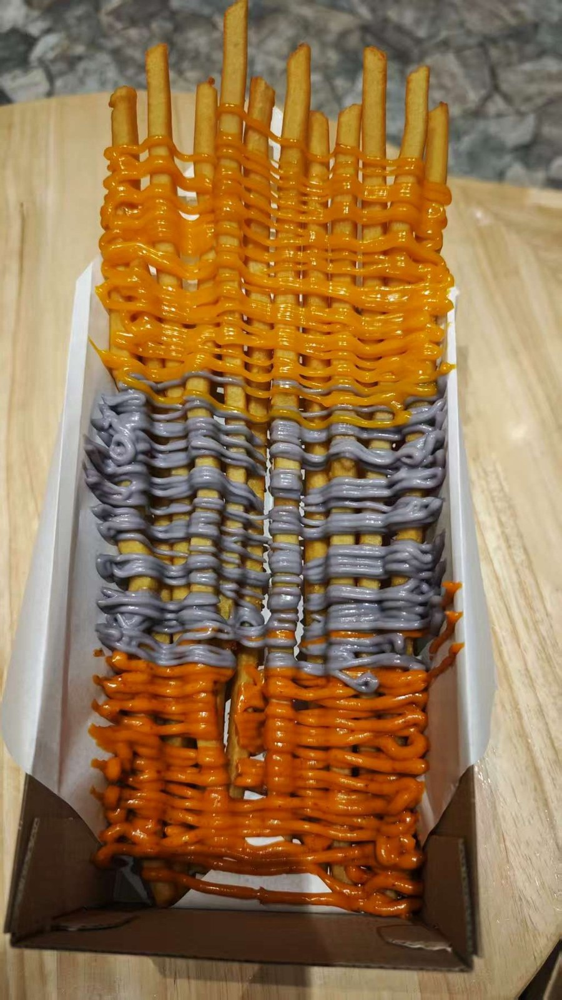
写在最后
曼谷给我的第一印象，来自低得几乎触手可及的云；真正留下来的记忆，却都在地面上：拥堵的街道、临时变化的行程、靠比划完成的一顿饭，以及被摆在同一条河边的两种生活。
这座城市并不总是让人舒服，却很少让人觉得单调。混乱和热闹，警惕和惊喜，常常一起出现。也许旅行值得记录的，正是这些无法被一句“好”或“不好”概括的时刻。
最后，感谢一起出游的刘总和盛哥。